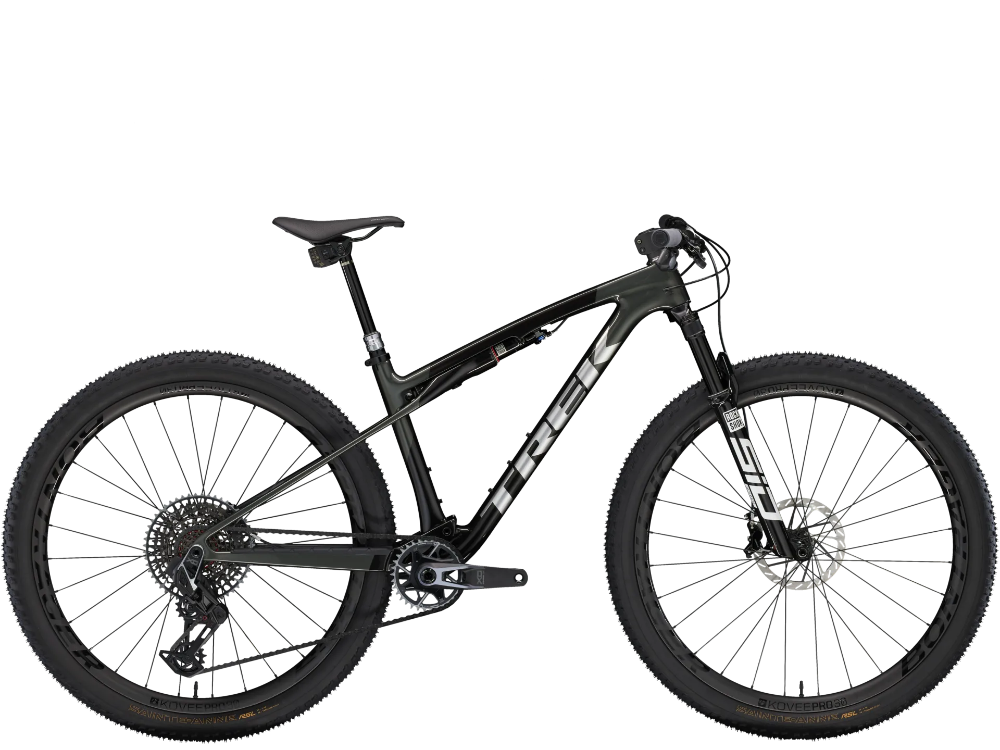

La Supercaliber SLR 9.9 X0 AXS es una bicicleta de montaña de XC ultraligera equipada con los mejores componentes para competir. Su cuadro de carbono SLR Mountain es ligero y está diseñado de forma meticulosa con un laminado de carbono de alta calidad que ofrece toda la rigidez que esperas sin añadir peso. Los circuitos de XC son cada vez más duros, por eso está equipada con una horquilla de 110 mm y una suspensión trasera IsoStrut de 80 mm que suaviza el pedaleo sin perder ni un ápice de eficiencia. La guinda del pastel son las ruedas de carbono, el cockpit de carbono, y la transmisión direct-mount inalámbrica X0 de SRAM.
- Cuadro:
carbono OCLV Mountain, IsoStrut, UDH, recorrido de 80 mm - Ruedas:
Bontrager Kovee Pro 30 - Maneta de cambio:
AXS POD Ultimate, con tija telescópic - Sillín:
SRAM X0 Eagle AXS, T-Type - Manillar:
Sistema de manillar y potencia integrado Bontrager RSL, carbono OCLV - Puños:
Bontrager XR Trail Pro, con bloqueo, aluminio - Freno:
Disco hidráulico de 4 pistones Shimano XT M8120 - Peso:
M - 15,65 kg (con sellante TLR, sin cámaras